Likeness pass v3: candidates against your references
For each person: your reference(s), the sheet used in preview_v2 (or the v2 redraw), then new candidates. Tell me per person which label is closest and what is still off. Nothing is re-animated until these are accepted.
Little Jade, 1988 (age 5)
Asked for: the reference's proportions, eye size and stronger brows; some bangs are fine; as cute as the reference.
previous sheet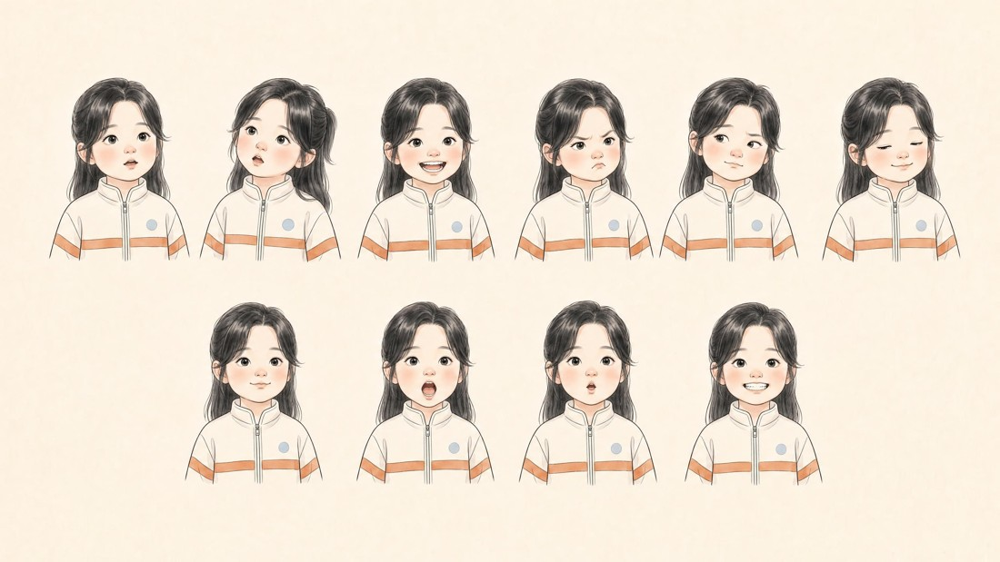
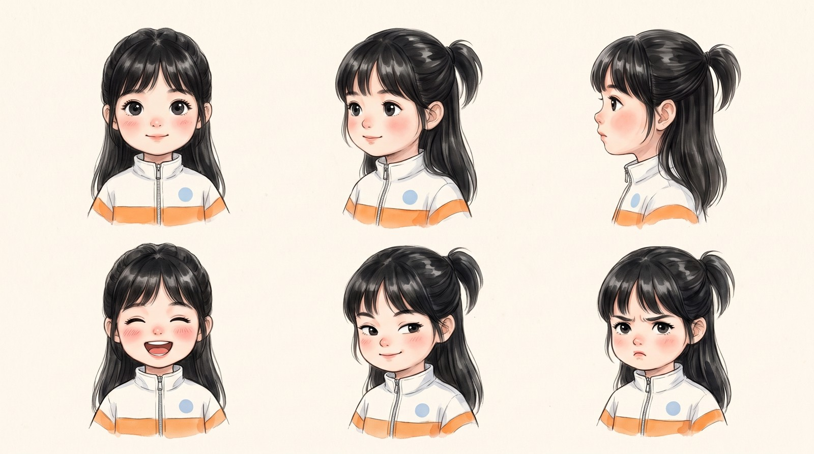
LJ-2 (GPT Image 2)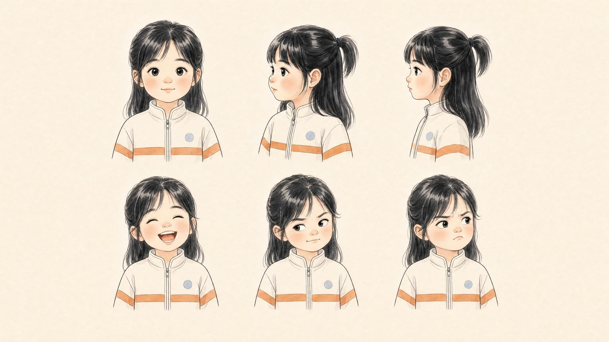
The daughter, 2026 (age 4)
Asked for: at least as cute as little Jade's reference; alive, never sullen.
previous sheet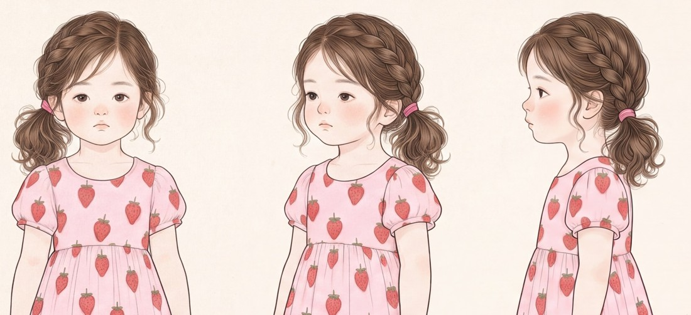
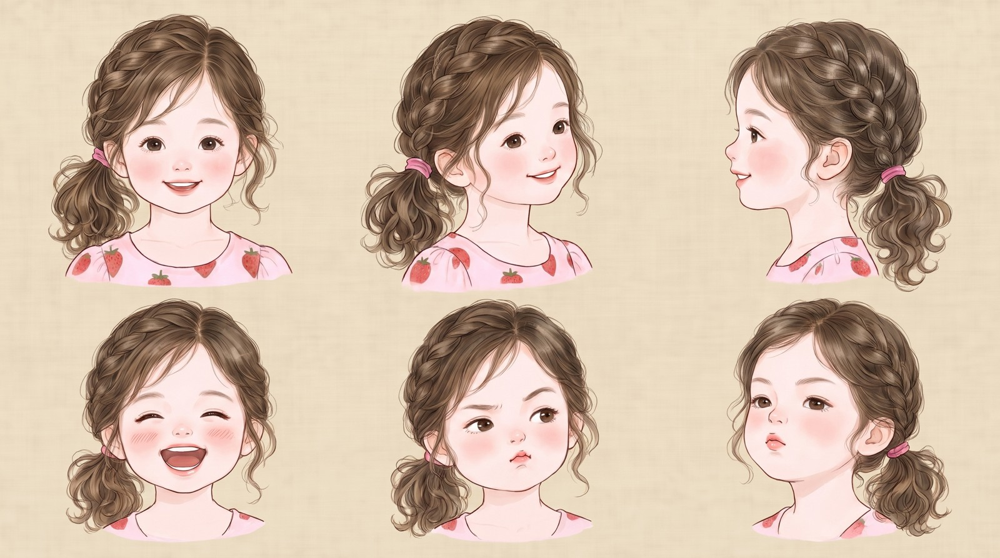
D-2 (GPT Image 2)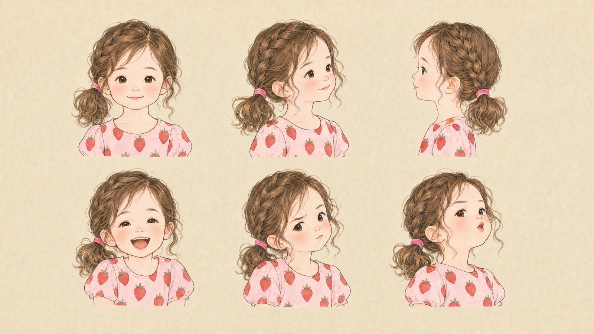
Mama, 1988 (35)
Asked for: looks much more like you in the teahouse painting, slightly stronger brows, same perm, 35 and attractive. No apron after she hangs it up.
previous sheet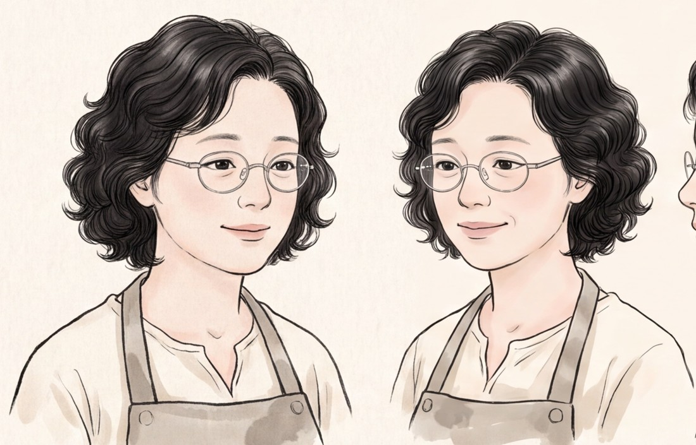
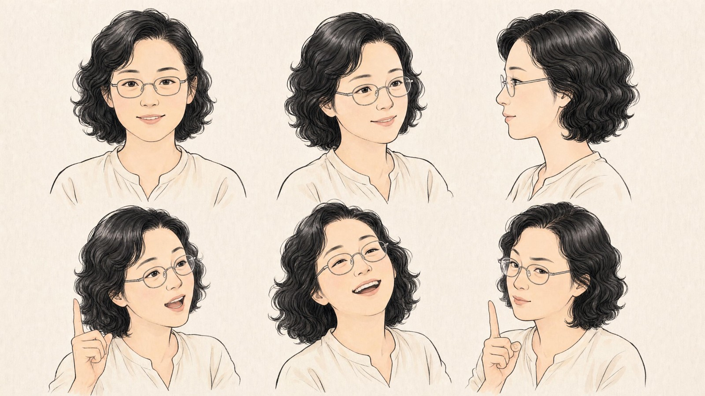
M-2 (GPT Image 2)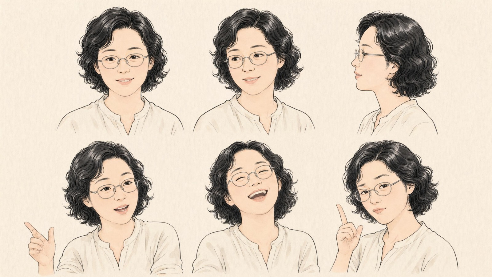
M-3 (Nano Banana Pro)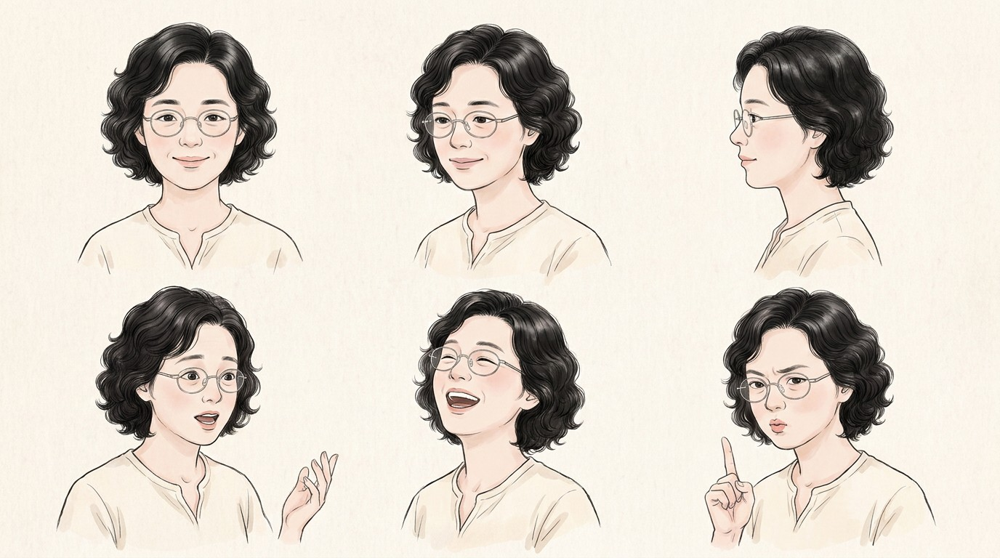
M-4 (Nano Banana Pro)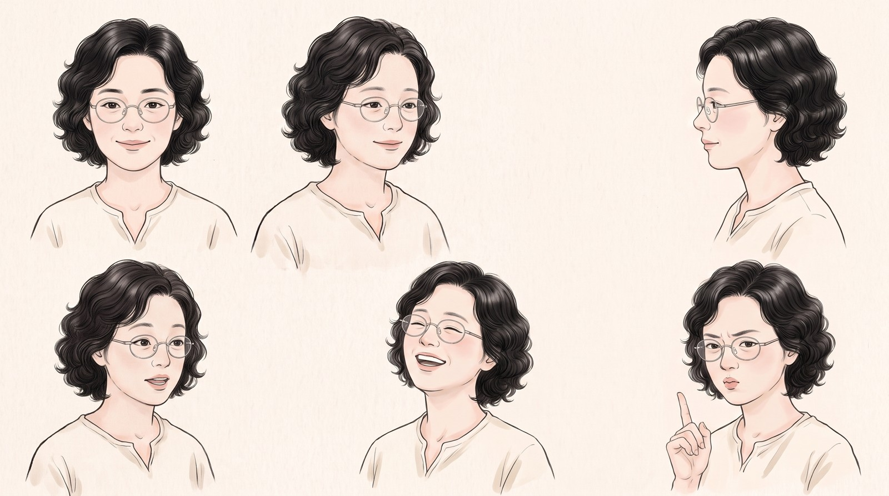
Jade, 2026
Asked for: darker eyes; brows about 10% stronger and asymmetric (left of picture straight, right straight-into-arch); hair, eye shape and face shape as in the redrawn sheet.
reference
previous sheet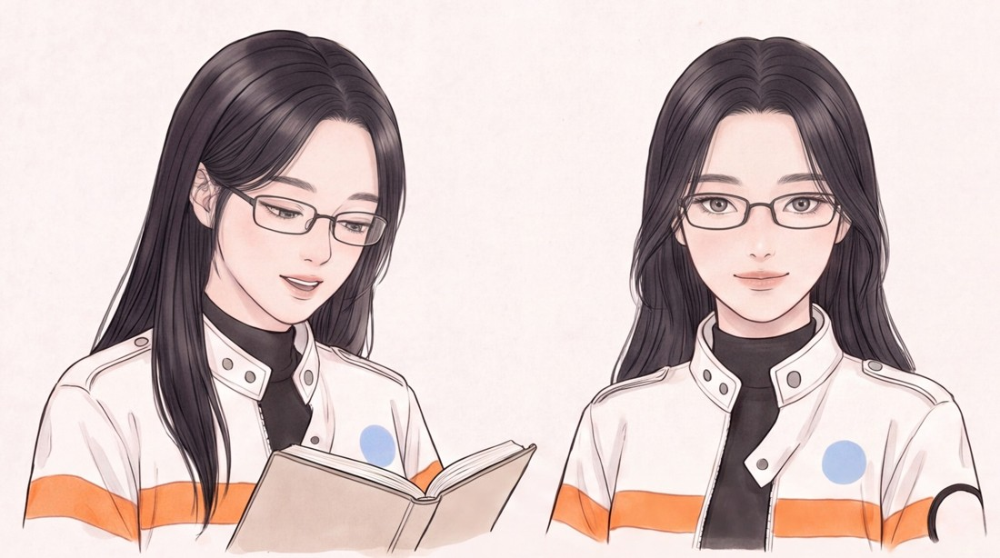
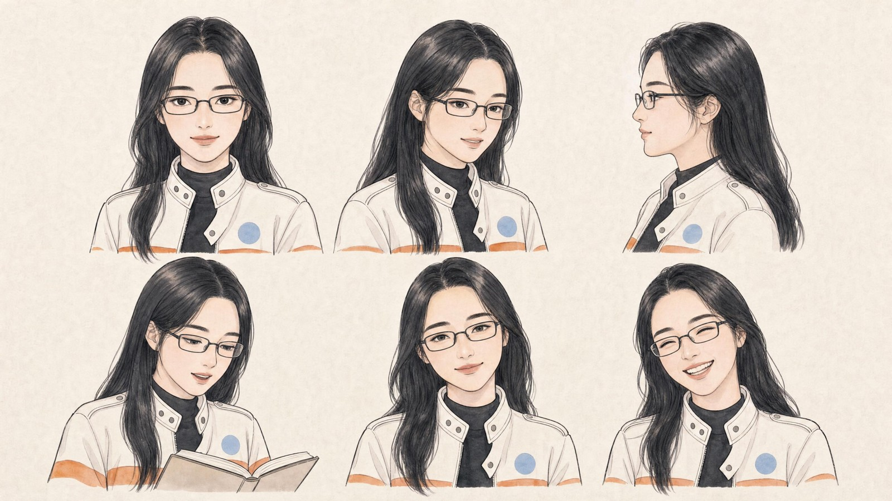
J-2 (Nano Banana Pro)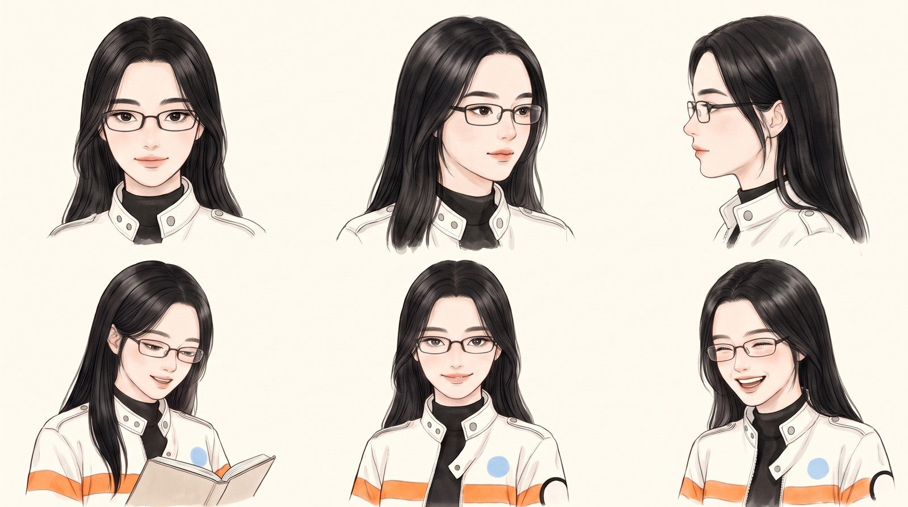
J-3 (GPT Image 2)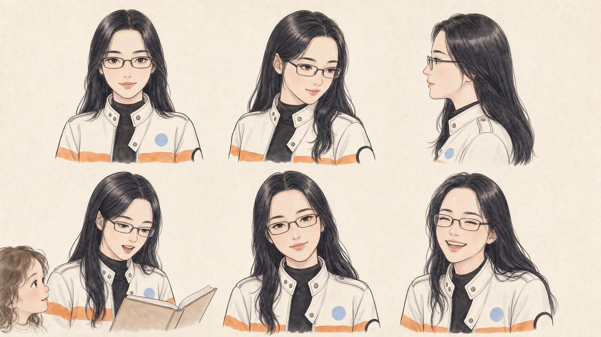
J-4 (Nano Banana Pro)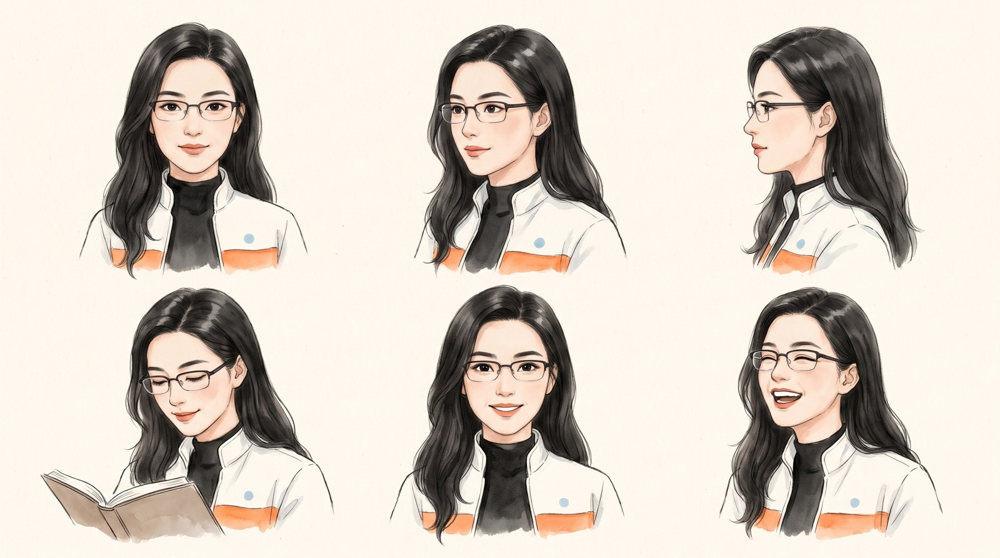